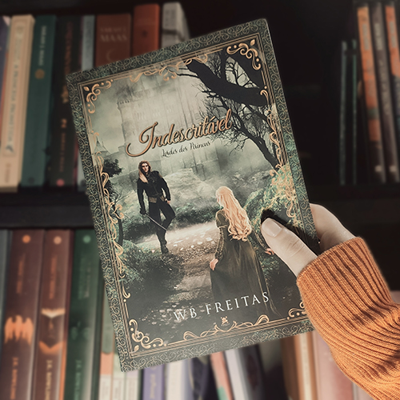
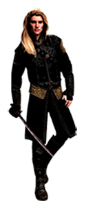
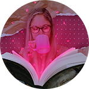

Indescritível
Sobre o livro
- Autora: W.B. Freitas
- Nº de páginas: 490
- Gênero: Romance Medieval
- Formato: eBook e Físico
- Ebook disponível pela Amazon e Kindle Unlimited
- Livro físico disponível pela editora The Books
Sinopse

É possível amar várias pessoas ao mesmo tempo?
A vida de Mélie nunca foi um lago tranquilo. Muito trabalho no campo, ao lado dos pais, e agora o período de seca e fome que se estendia como uma praga.
Ao tentar vender a única coisa que possuíam para alimentar a família, acabou sendo levada como pagamento dos impostos atrasados, tendo que trabalhar no castelo de Lorde Marchant.
O que ela não esperava era ter de lidar com tantos homens diferentes e satisfazer a todos os caprichos dele.
Minhas considerações
Fiquei simplesmente apaixonada, a escrita da autora é muito fluida e gostosa; a estória tem um desenvolvimento gradativo que nos permite acompanhar a evolução dos personagens, bem como a relação entre eles.
Foi a primeira vez que li um livro de época com um personagem com distúrbio de personalidade múltipla, foi uma experiência diferente e encantadora, ver como as personalidades do Aaron eram exploradas no decorrer da estória. A Mélie é uma personagem inocente e humilde, mas foge do clichê de mocinha que precisa ser resgatada, ela é decidida, tem orgulho de ser quem é, e sempre dá o seu melhor e aprende muito com tudo que lhe acontece.
Para mim o ponto alto é a relação desses dois personagens, é simplesmente apaixonante acompanhar a evolução do relacionamento deles, e como isso vai afetando a rotina de todos ao redor deles.
Quotes favoritas
O amor verdadeiro é algo inteiro, não aos pedaços.
— Não saber ler é perigoso, nos deixa reféns do que nos dizem.
[...] a primeira vez que olhei em seus olhos, me fascinei, mas me atraía mesmo de olhos fechados, ou dormindo, maneira que fosse e então entendi que não são seus olhos, é ele, sua totalidade que me atrai profundamente.
Conheça a autora


Voltar para a página inicial